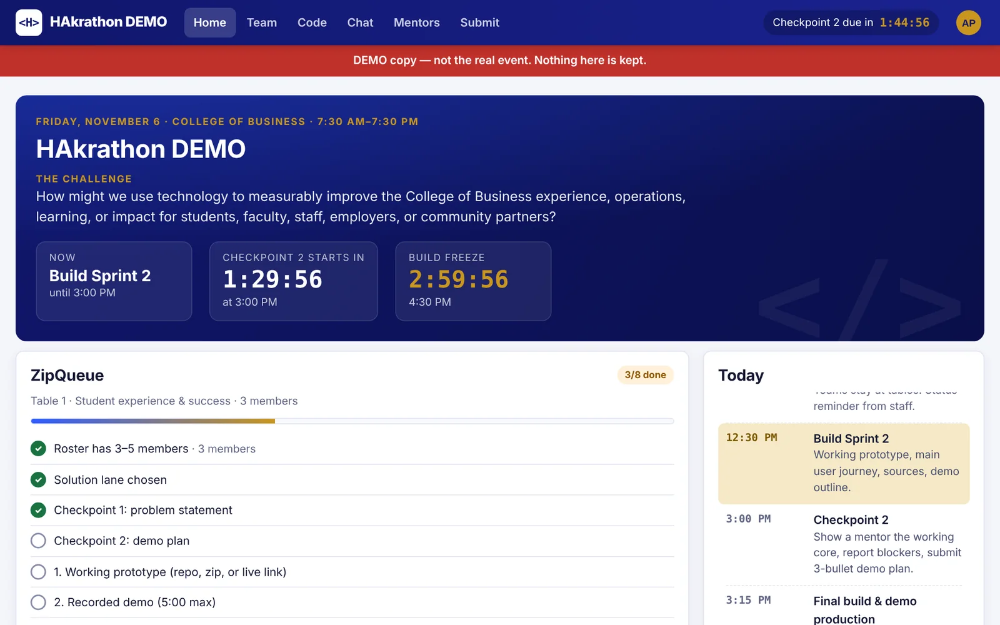
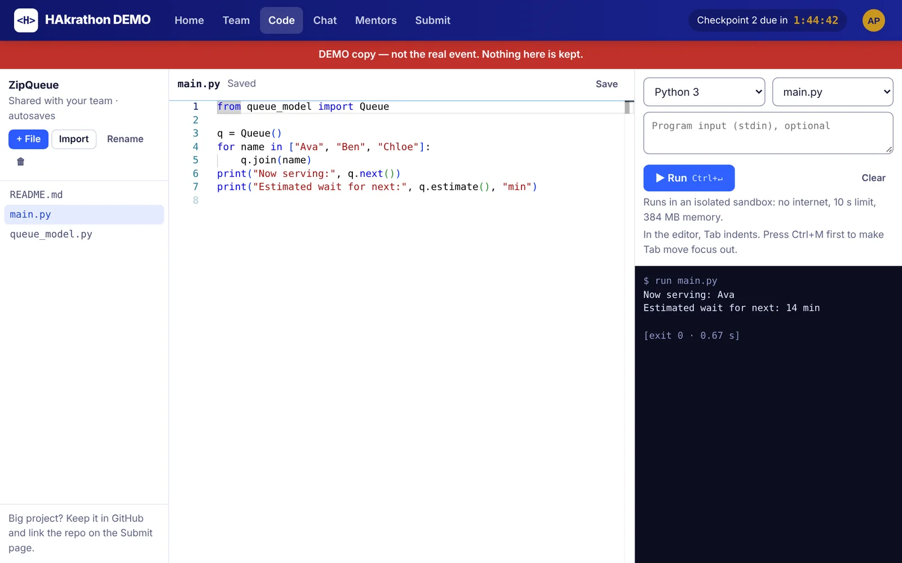
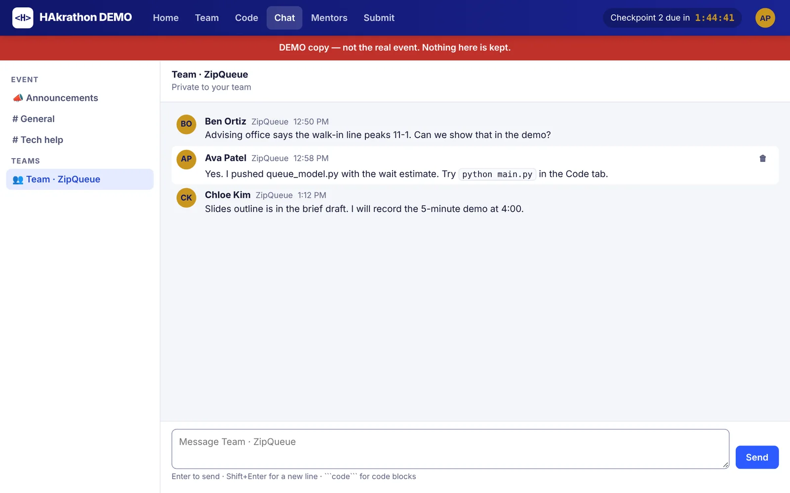
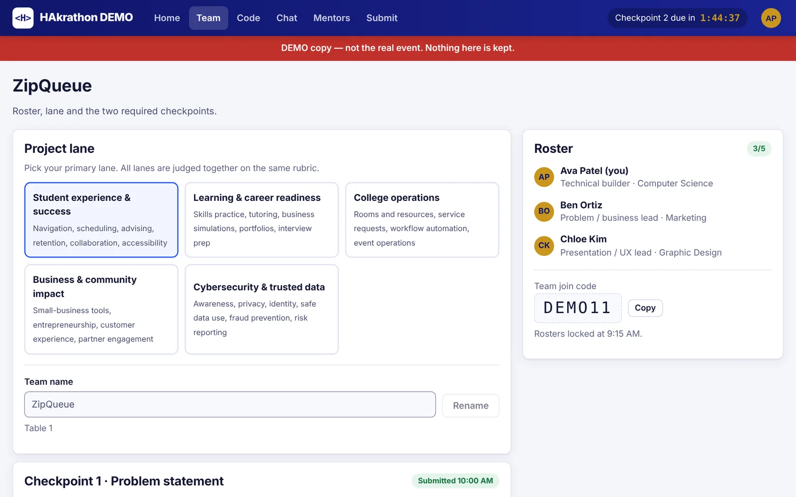
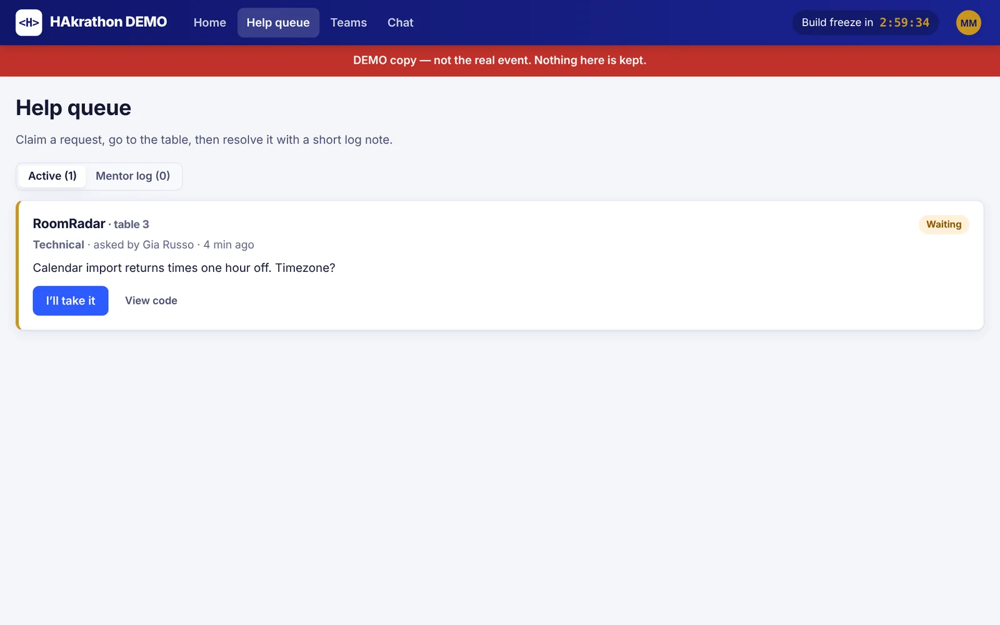
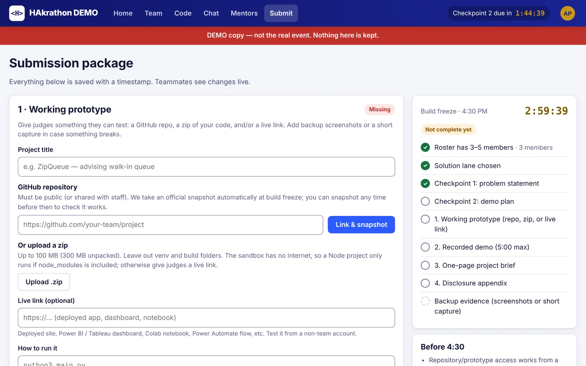
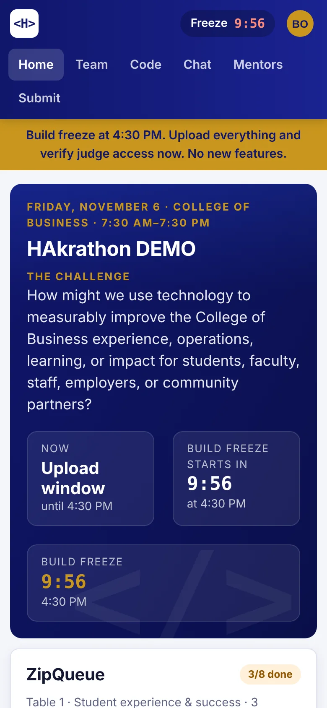
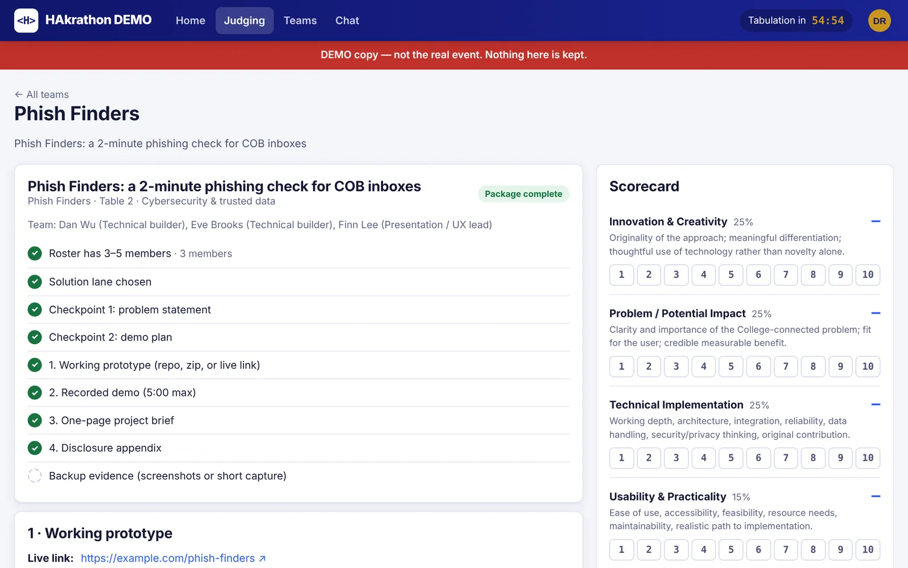
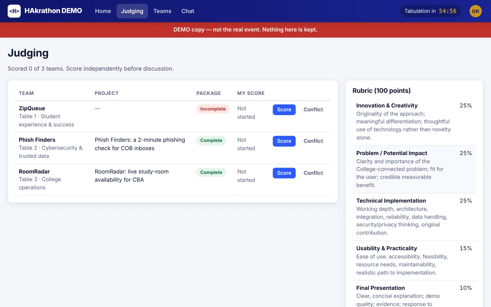
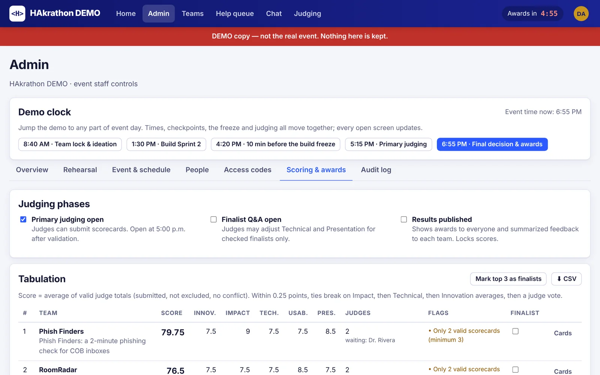

HAkrathon 2026 · UA College of Business · Fri, Nov 6
Teams chat, write and run code together, link their GitHub repo and turn in their package. Mentors work a help queue. Judges score every project on the 100-point rubric. Everything updates live, and it locks itself at the 4:30 build freeze.

Every team gets a home screen with the live schedule and a checklist of what judges need, a shared code editor, and a private team chat.




The package page shows exactly what is missing. Teams link a GitHub repo, upload a zip, or add a live link, plus a 5-minute demo video, a one-page brief and disclosures. At 4:30 everything locks, and the portal takes the official copy of each repo as it stood at the freeze.


Judges see every team's package, browse and run the code, watch the video, and score each criterion 1 to 10. Conflicts of interest are declared, not hidden.


Staff see averages per criterion, missing scorecards and tie-break rules in one table, mark finalists, and publish results to every screen at once.

Team, code editor, chat, mentor requests, checkpoints and the final package.
Help queue and a read-only view of any team's code.
Packages, repos, videos and the scorecard; finalist Q&A adjustments.
Access codes, schedule, announcements, freeze extensions, tabulation, results, backups and an audit log.
It runs on one laptop at the event. Students connect over the venue Wi-Fi, or through a secure tunnel if the network blocks it. Nothing depends on an outside service on the day.